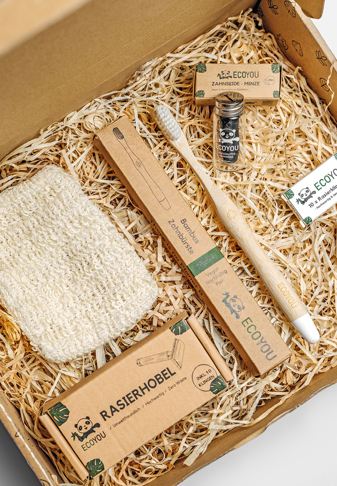
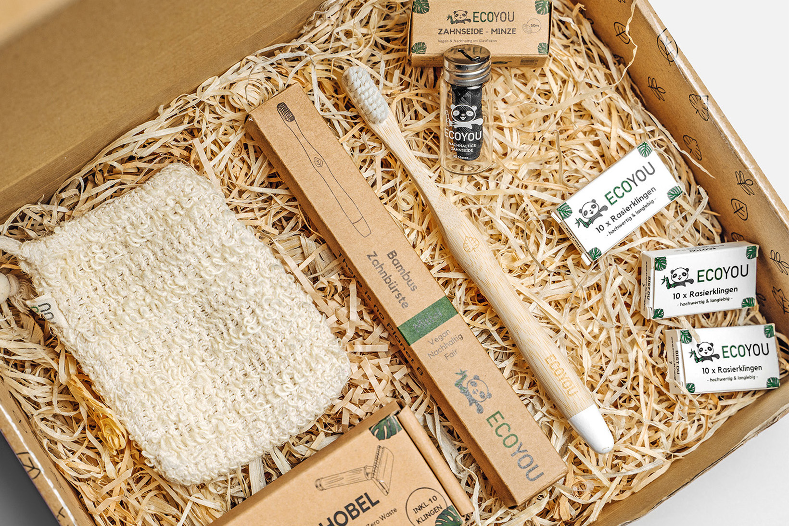

2021
Projekt im Praktikum - Verpackungen für EcoYou
Im Praktikum bei EcoYou war ich verantwortlich für das Design der
Verpackungen der Seifen in den Sorten Lavendel, Aktivkohle, Aloe Vera & Lime.
Darüber hinaus habe ich in Adobe Illustrator die Verpackungen mehrerer Badezimmerprodukte wie
für Zahnseide und Rasierhobel überarebitet und an das Corporate Design angepasst.